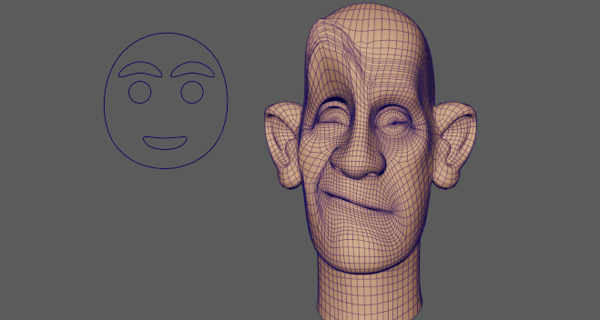
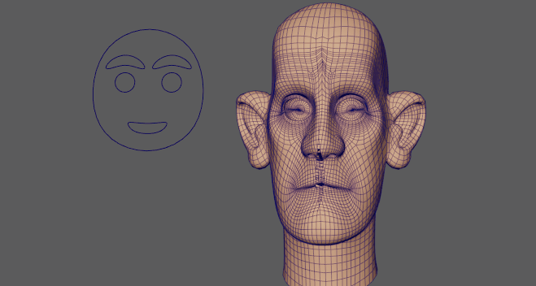

变形变形器可用于快速镜像几何体。
在本示例中，变形变形器镜像效果将应用于面部模型，并且表情沿 X 轴从角色面部的一侧镜像到另一侧。

变形变形器镜像面部表情。
- 选择要镜像的几何体。
- 在“变形”(Deform)菜单中，选择“变形”(Morph) >
 。此时将显示变形选项(Morph options)窗口。（“变形”(Deform)菜单显示在“建模”(Modeling)(F2)、“绑定”(Rigging)(F3) 或“动画”(Animation)(F4) 菜单集中。）
。此时将显示变形选项(Morph options)窗口。（“变形”(Deform)菜单显示在“建模”(Modeling)(F2)、“绑定”(Rigging)(F3) 或“动画”(Animation)(F4) 菜单集中。）
- 将“变形模式”(Morph Mode)设置为“镜像”(Mirror)。
- 在属性编辑器(Attribute Editor)的“变形”(Morph)选项卡中，从“镜像方向”(Mirror Direction)菜单中选择反射轴。

面部的右侧从 +x 轴更改为 -y 轴